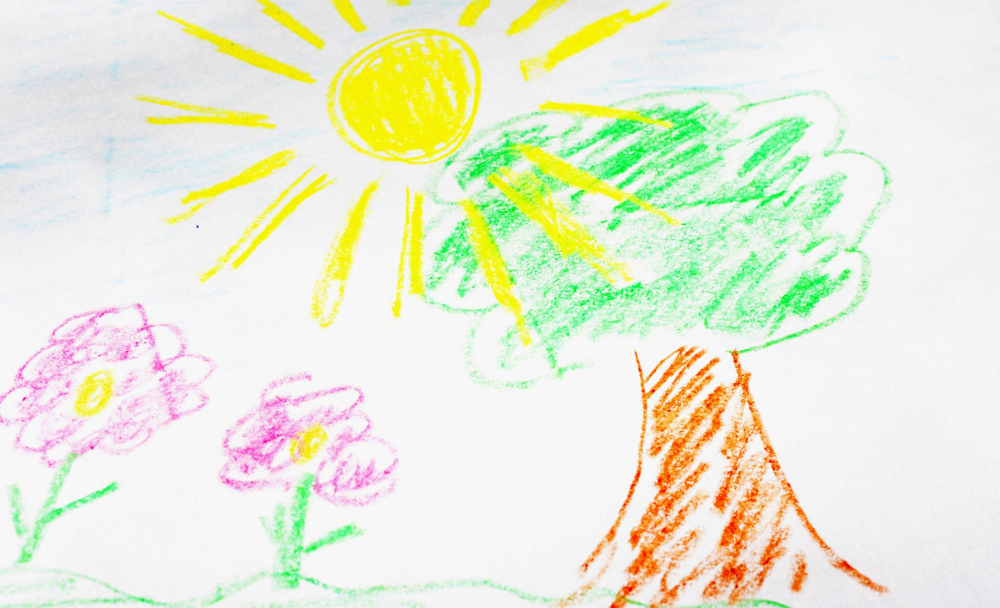
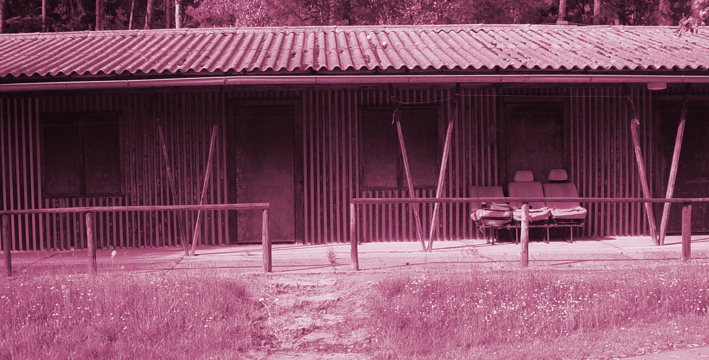
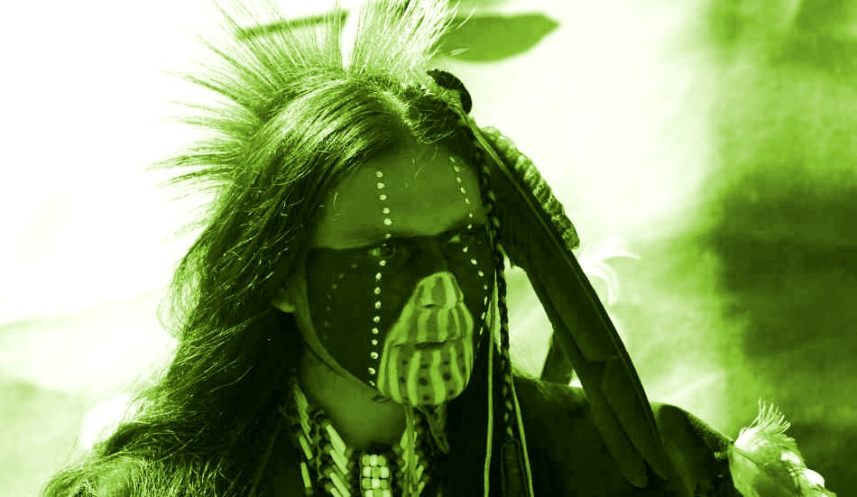
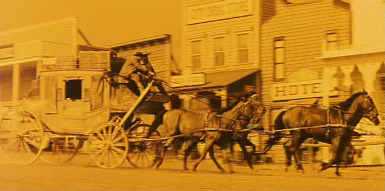
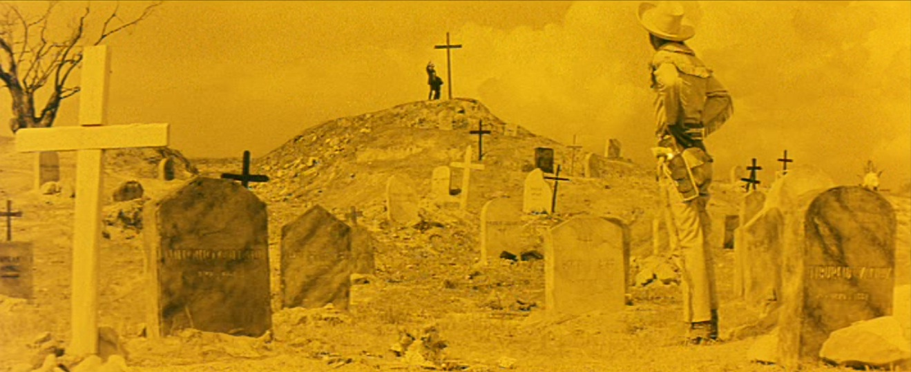
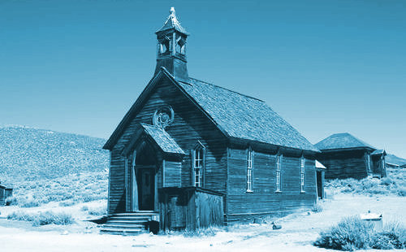
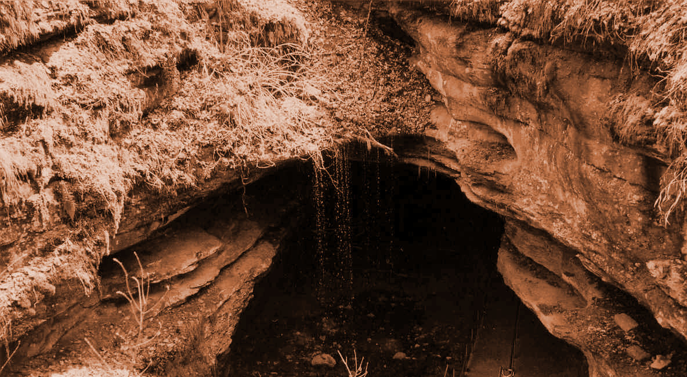

X: Památný strom – testovací stanoviště

Tento urostlý památný strom s nezvykle hladkou kůrou zde zasadil roku 1234 svatý Buhvíkdo. Neroste na něm sice žádné chutné ovoce, zato si však v koruně udělala hnízdo známá zlodějka straka.
| X1: Zkusím vylézt na strom a podívat se do hnízda. |
X2: Zkusím shodit hnízdo pomocí plastového Létajícího talíře. |
X3: Tady se mi to nelíbí, chci raději jít jinam. |
| X1: Prvních pár metrů šlo dobře, ale zhruba v půlce cesty se ti smýkla noha po hladké kůře stromu a spadl jsi zase na zem. V rámci rekonvalescence udělej kotrmelec. |
X2: Trefa! Létající talíř se sice zasekl ve větvoví, ale hnízdo spadlo na zem. Vzal jsi si z něj krásnou Lesklou náušnici. |
X3: Dobrá, jdi na začátek Opravdové hry: do Stetson City, na stanoviště A. |
A: Stetson City
Vítej ve Stetson City! Tohle ospalé westernové městečko na první pohled potřebuje ráznou ruku i mušku pistolníka. Ty, Limonádový Joe, máš ale cíl jiný – je třeba neutralizovat podlého Hogo Foga a osvobodit z jeho spárů krásnou Winifred Goodmanovou.
| A1: Jsem přece obchodní zástupce fy. Kolaloka a syn, poprosím proto svého skladníka, aby mi donesl nějakou Kolaloku. |
A2: Jsem přece obchodní zástupce fy. Kolaloka a syn, zahraju si proto se svým skladníkem karty. |
A3: Vydám se do Informační kanceláře města Stetson City. |
| A1: Než skladník donese Kolaloku, zvolej třikrát nahlas pokřik svého týmu. Tím získáš tři Lahve Kolaloky. |
A2: Karty jsi prohrál. Abys zahnal chmury, protáhni se a udělej deset dřepů. |
A3: Jdeš do Informační kanceláře na stanoviště R. |
B: Banka
Ve všední den by tu jistě bylo plno, ale dnes – o víkendu – tu doslova chcíp pes (takže to tu pěkně smrdí). Místnosti jasně vévodí masivní trezor, který bude jistě skrývat nemálo hotovosti...
| B1: Počkám, jestli se někdo neobjeví. |
B2: Dojdu k trezoru a zjistím, co by se z něj dalo odnést. |
B3: Mám s sebou přece Bankéře, tak ať se chlapec činí! |
| B1: Tož nahlas počítej do sta. Ale je víkend, nikdo nepřišel. |
B2: Tvoje nakoukávání do trezoru kolemjdoucí šerif vyhodnotil jako pokus o vyloupení banky a okamžitě tasil kolty. Jdi do Vězení, na stanoviště J. |
B3: Bankéř ti ochotně poskytne Bankovní úvěr. |
C: Falešný hráč
Tak tenhle karbaník je skutečně mistr svého řemesla. Skrz jeho černé brýle není vidět ani náznak emocí, když ti nabídne balíček karet. "Jednu si vezmi, cizinče – uvidíme, kam tě na tvé cestě zavede."
| C1: Ukážu Falešnému hráči Černou kartu. |
C2: Ukážu Falešnému hráči Červenou kartu. |
C3: Vytáhnu si jednu kartu z balíčku. |
| C1: Ukázal jsi Černou kartu a můžeš proto jít ke Kostelním vratům na stanoviště V. |
C2: Ukázal jsi Červenou kartu a můžeš proto jít do Trigger Whisky Saloonu na stanoviště W. |
C3: Kartu si nechej. Pokud je je červená, jdi do Trigger Whisky Saloonu na stanoviště W. Pokud je černá, jdi ke Kostelním vratům na stanoviště V. |
D: Marodka

Na dveřích visí cedule:
Tak popravdě, po kolikáté už tu jsi?
| D1: Poprvé |
D2: Podruhé |
D3: Potřetí |
D4: Počtvrté |
D5: Popáté |
D6: Pošesté či ještě víc |
| D1: Pamatuj, že dvakrát měř a jednou řež. Udělej 15 dřepů a můžeš pokračovat. |
D2: Pamatuj, že čistota je půl zdraví. Udělej 15 kliků a můžeš pokračovat. |
D3: Pamatuj, že veselá mysl je půl zdraví. Udělej 30 dřepů a můžeš pokračovat. |
D4: Pamatuj, že opatrnosti nikdy nezbývá. Tak jo, dnes to bude grátis, můžeš pokračovat. |
D5: Pamatuj, že kam nechodí slunce, chodí lékař. Udělej 10 kliků a 10 dřepů a můžeš pokračovat. |
D6: Pamatuj, že veselý a čistý člověk je zdravý. Udělej 20 žabáků a můžeš pokračovat. |
E: Pokoj Hogo Foga, 1. patro Trigger Whisky Saloonu
Málokterý padouch působí tak sebejistě, jako zrádný Hogo Fogo. Z jeho doutníku v kousku úst stoupá tenký dým, když se na tebe podívá pohledem tak křivým, jako je ostří kosy. Všímáš si, že v zadním koutu místnosti leží spoutaná Winifred Goodmanová.
| E1: Tasím zbraň a pálím na Hogo Foga. |
E2: Pokusím se využít příležitosti a zneuctít svázanou Winifred Goodmanovou. |
E3: Půjdu zpět ke dveřím Trigger Whisky Saloonu. |
E1: Hogo Fogo je na tebe ale už připravený. Bleskurychle tasí skrytý revolver: pokud nemáš Kouzelný Colt, posílá tě dobře mířeným výstřelem na Marodku, na stanoviště D.
V opačném případě, pokud Kouzelný Colt máš, pálíš rychlejí a přesněji! Hogo Fogo to koupil přímo mezi oči a ty se tak stáváš vítězem hry! Gratulujeme, vyhledej organizátora a pochlub se!
|
E2: Tak takovéhle pokusy se Winifred Goodmanové opravdu nelíbí. Zle tě poškrábala a pokousala, jdi na Marodku na stanoviště D. |
E3: Jdeš do Trigger Whisky Saloonu, stanoviště W. |
F: Indiánský šaman

Šaman zvedne zrak od prastarého ohně, zamyslí se a zvolna praví: "Mnozí už zkoušeli přemoci záludného Hogo Foga, avšak nikdo neuspěl. Možná by jim byl pomohl Kouzelný Colt, jenže k jeho výrobě jsou potřeba čtyři magické substance: Orlí pero, Všeprorážející střela, Bystrozraká muška a Bankovní úvěr. Když mi je seženeš, mohu být nápomocen."
| F1: Mám všechny substance a prosím proto Šamana, aby mi vyrobil Kouzelný Colt. |
F2: Půjdu do Banky získat úvěr. |
F3: Vydám se do Dead Man's Valley hledat magické substance. |
F4: Vydám se do Fata Morgana Valley hledat magické substance. |
| F1: Šaman ti odebral magické substance a vyrobil z nich nádherný a lesklý Kouzelný Colt. Získáváš patrně nejmocnější zbraň Divokého západu. |
F2: Jdeš do Banky na stanoviště B. |
F3: Jdeš do Dead Man's Valley na stanoviště S1. |
F4: Jdeš do Fata Morgana Valley na stanoviště S2. |
H: Dostavník

Dostavníkem se lze dostat i do nebezpečných vzdálených krajů. Chce to ale hodně kuráže, dobrého kočího a zpravidla i přesnou mušku.
| H1: Nechám se dostavníkem svézt do Jeskyně Pancho Kida ve skalách. |
H2: Zajdu se nejprve posilnit do Kolaloka Saloonu. |
H3: Strávím chladnou noc v bezpečí dostavníku. |
| H1: Jedeš do Jeskyně Pancho Kida na stanoviště U. |
H2: Jdeš do Kolaloka Saloonu na stanoviště K. |
H3: V noci tě v dostavníku okradli bandité. Přicházíš o všechny Lahve Kolalokovy limonády, Zlaté nugety a Krabičky sirek. |
J: Vězení
Za své činy se ocitáš ve věznici. Uprchnout odsud, to nebude snadné.
| J1: Vykopu si únikový tunel. |
J2: Přepiluju mříže. |
J3: Žádné prchání. Jako poctivý vězeň si zodpovědně odsedím svůj trest. A třeba mne propustí dříve za vzorné chování. |
| J1: No to tě čeká spousta dřiny. Udělej 20 žabáků. Pak musíš změnit identitu, takže jdi na začátek Stetson City na stanoviště A. Tvoje věci a know-how ti zůstávají. |
J2: To dá ale spoustu práce! Udělej 20 dřepů. Pak musíš změnit identitu, takže jdi na začátek Stetson City na stanoviště A. Tvoje věci a know-how ti zůstávají. |
J3: Pamatuj, že kdo si počká, ten se dočká. Počítej nahlas do sta, tak, aby tě slyšel nejbližší bachař. Pak můžeš jít do Informační kanceláře na stanoviště R. |
K: Kolaloka Saloon
Tak na tomhle místě se cítíš jako doma. Příjemná muzika, usměvavý hostinský a všudypřítomné lahve s Kolalokou. Co si dáš?
| K1: Nedám si nic; namísto toho se vychytrale vmísím do hloučku místních bujarých pijanů a pokusím se zaslouchnout nějaké zajímavé informace. |
K2: Koupím si pořádnou večeři. |
K3: Koupím si krabičku sirek. |
K4: Koupím si uzený kojotí jazyk. |
| K1: Všichni jsou vlivem nasávání Kolaloky v takové euforii, že nikomu není nic rozumět. |
K2: Pokud nemáš Zlaté nugety, jdeš do vězení (stanoviště J) za pokus o podvod!
V opačném případě si dáváš super večeři. Mňam! |
K3: Pokud nemáš Zlaté nugety, jdeš do vězení (stanoviště J) za pokus o podvod!
V opačném případě se pětkrát otoč na místě dokolečka a získáš tak Krabičku sirek. Pěkná, jsou v ní sirky. Chrastí. |
K4: Pokud nemáš Zlaté nugety, jdeš do vězení (stanoviště J) za pokus o podvod!
V opačném případě si dáváš uzený kojotí jazyk. Chuťově nic extra, ale tvého zájmu v regionálních pochoutkách si všiml kolemjdoucí Indiánský Šaman a pozval tě do svého wigwamu. Jdi k Šamanovi na stanoviště F. |
M: Hřbitov

Na hřbitově jsou, překvapivě, hroby. Řada z nich je částečně rozbitá, vyloupená či poničená. Už z dálky je poznat, že v jednom z hrobů se leskne několik zlatých nugetů – jenže na náhrobní desce si hoví svinutý chřestýš. Co s tím?
| M1: Nabídnu chřestýšovi Lahev Kolalokovy limonády. |
M2: Zabiju chřestýše. |
M3: Pokusím se chřestýše obejít a rychle nabrat pár Zlatých nugetů. |
M4: Odpočinu si, třeba přijdu na jiné myšlenky. |
| M1: Chřestýš Lahev vypil, ale nezdá se, že by mu moc chutnala. |
M2: Při tomto zoufalém pokusu tě had uštknul. Jdi na Marodku na stanoviště D. |
M3: Chřestýše jsi obcházel takovým obloukem, že jsi při tom zabloudil do Dead Man's Valley. Jdi na stanoviště S1. |
M4: Tak dlouho jsi odpočíval, až chřestýš usnul. Využil jsi situace a nabral dostatečnou zásobu Zlatých nugetů (jistě budou stačit na všechny nákupy)! |
N: Nádraží
Na tomhle opuštěném nádraží moc často lokálka nestaví. Čas od času se ale lze na železném oři dostat do různých odlehlých míst...
| N1: Vrátím se zpět do Informační kanceláře. |
N2: Pojedu vlakem směrem ke Hřbitovu |
N3: Pojedu vlakem k domku Falešného hráče |
N4: Pojedu vlakem k Bance |
| N1: Jdeš do Informační kanceláře na stanoviště R. |
N2: Jedeš na Hřbitov na stanoviště M. |
N3: Jedeš k Falešnému hráči na stanoviště C. |
N4: Jedeš k Bance na stanoviště B. |
O: Tornado Lou
V Trigger Whisky Saloonu zpívá proslulá Arizonská pěnice Tornádo Lou. Je smutná, neboť si uvědomuje, že její hříchy už přesáhly některé meze.
| O1: Nabídnu této Arizonské pěnici Odpuštění (pakliže jej mám). |
O2: Nabídnu této Arizonské pěnici neslušný návrh. |
O3: Nabídnu této Arizonské pěnici, že jí připálím její špičku s cigaretou. |
O4: Půjdu zpět ke dveřím Trigger Whisky Saloonu. |
| O1: Tornádo Lou zapěla: "Konečně budu jinou!" a z vděčnosti ti věnovala Mapu Fata Morgana Valley. |
O2: No to sis dal. Pohlavní choroby nejsou nic příjemného a jejich léčení teprve ne. Upaluj na Marodku na stanoviště D. |
O3: To umělkyni tak rozparádilo, že ti vzala všechny Krabičky sirek, které s sebou máš. |
O4: Jdeš do Trigger Whisky Saloonu, stanoviště W. |
P: Kostel

Není překvapením, že v bezbožném Stetson City jsou kostelní lavice zcela prázdné. Kolem Oltáře krouží a bzučí malé mušky...
| P1: Vysypu jednu Krabičku sirek a zkusím do ní chytit nějakou mušku. |
P2: Prohlédnu si barevné vitráže v oknech. |
P3: Vyberu obsah pokladničky na dobročinné dary. |
| P1: Ale to je náhoda! Vysypal jsi jednu Krabičku sirek (přicházíš o ni) a chytil do ní – světe div se – magickou Bystrozrakou mušku! Necháš si ji, bude se hodit. |
P2: Jsou skutečně krásné. Většina z nich samosebou zobrazuje hrdinské činy svatého Buhvíkoho. |
P3: Tvého podlého skutku si bohužel všiml farář a hned zavolal šerifa; jdi do Vězení na stanoviště J. |
R: Informační kancelář
Do Informační kanceláře zavítá dříve nebo později každý turista. Možná i proto za přepážkou sedí nezvykle půvabná a na první pohled osamělá úřednice. V tomto parném dni si musela rozepnout blůzku až o tři knoflíčky...
| R1: Nabídnu slečně Lahev Kolalokovy limonády a optám se, kudy do Kolaloka Saloonu. |
R2: Nabídnu slečně Lahev Kolalokovy limonády a optám se, kudy na Nádraží. |
R3: Nabídnu slečně Lahev Kolalokovy limonády a optám se, kudy na stanoviště Dostavníku. |
R4: Nabídnu slečně Lahev Kolalokovy limonády a optám se, jestli by si nechtěla rozepnout další knoflíček na blůze. |
R5: Vrátím se raději zpět na začátek Stetson City. |
| R1: Slečna je potěšena a s úsměvem ti připomíná, že v Kolaloka Saloonu se platí Zlatými nugety. Přicházíš o Lahev Kolaloky a jdeš do Kolaloka Saloonu, na stanoviště K. |
R2: Přicházíš o Lahev Kolaloky a jdeš na Nádraží, na stanoviště N. |
R3: Přicházíš o Lahev Kolaloky a jdeš k Dostavníku, na stanoviště H. |
R4: Přicházíš o Lahev Kolaloky a ještě sis vysloužil facku od slečny za přepážkou. Jdi na Marodku na stanoviště D. |
R5: Jdi na začátek Stetson City na stanoviště A. |
S1: Dead Man's Valley
Poušť, písek, vedro, vyprahlo... název tohoto údolí je skutečne popisný. Zdržovat se v téhle výhni déle by mohlo být zatraceně nebezpečné.
| S11: Půjdu se raději podívat do Fata Morgana Valley. |
S12: Vysypu Krabičku sirek a naberu do ní něco svinstva z nedaleké hromádky. |
S13: Vypiju na posilněnou Lahev Kolalokovy limonády. |
S14: Chvíli si posedím na sluníčku. |
S15: Vykoupu se v nedalekém jezírku. |
| S11: Jdeš do Fata Morgana Valley, na stanoviště S2. |
S12: Vysypal jsi jednu Krabičku sirek (přicházíš o ni) a prohrabuješ se tím svinstvem... u svatého Buhvíkoho! Našel jsi tam pověstnou Všeprorážející střelu! Bereš ji samozřejmě s sebou. |
S13: Na zdraví! Dobrá byla (přicházíš o Lahev Kolalokovy limonády). |
S14: Úžeh! Úpal! Šup se léčit na Marodku, na stanoviště D. |
S15: Jakmile jsi vlezl do vody, využil příležitosti nějaký bandita a sebral ti oděv. Co čert nechtěl, šel kolem zrovna místní šerif a za obnažování na veřejnosti jdeš do Vězení na stanoviště J. |
S2: Fata Morgana Valley
Nedaleko podezřele vypadající hromady kamenů sedí Grimpo a šklebí se na tebe. Na první pohled je jasné, že dnes už si z láhve whisky párkrát pořádně přihnul.
| S21: Půjdu se raději podívat do Dead Man's Valley. |
S22: Nabídnu Grimpovi Lahev Kolalokovy limonády. |
S23: Zkusím kopat na nějakém příhodném místě. |
S24: Zkusím kopat na místě, které ukazuje moje nedávno získaná Mapa. |
| S21: Jdeš do Dead Man's Valley, na stanoviště S1. |
S22: Grimpo Lahev vypil (přicházíš o ni), ale nechutnala mu – má raději Trigger Whisky. |
S23: Vykopal jsi pěknou hromadu zeminy, ale nic zajímavého se neobjevilo. |
S24: To je ale štěstí! Po chvíli kopání jsi narazil na Ostatky svatého Bůhvíkoho; světce, který dle legendy podlehl ve střeleckém souboji i přesto, že byl vybaven Všeodrážejícím štítem. Osudným se mu stalo to, že se před soubojem zapomněl pomodlit. Ostatky bereš s sebou, určitě se můžou hodit. |
U: Jeskyně Pancho Kida

Pancho Kid, přezdívaný též "Orlí muž", sedí ve své sluji a zvídavě tě pozoruje.
| U1: Nabídnu Pancho Kidovi Lahev Kolalokovy limonády. |
U2: Nabídnu Pancho Kidovi Krabičku sirek. |
U3: Zapálím pomoci jedné Krabičky sirek svíčku, aby bylo lépe vidět. |
| U1: Pancho Kid Lahev vypil (přicházíš o ni) a chutnala mu. |
U2: Pancho Kid si od si od tebe s radostí vzal Krabičku sirek (přicházíš o ni) a schoval si ji pod postel. |
U3: Přicházíš o Krabičku sirek. Za světla svíčky vypráví Pancho Kid historky o tom, jak přišel k přezdívce "Orlí muž". Využiváš jeho nepozornosti a sebereš mu jedno Orlí pero. |
V: Kostelní vrata
Neokázalá vrata představují vstup do místního svatostánku Božího. Farář ale odmítá kohokoliv vpustit dál; po několika nedávných přestřelkách totiž začal silně pochybovat, je-li jeho stádečko věřících ještě stále nakloněno té správné víře.
| V1: Zkusím přesvědčit faráře, že jsem dobrým věřícím. |
V2: Přemluvím faráře, aby svůj svatostánek ve Stetson City raději zabalil a odstěhoval se. |
V3: Požádám faráře o Odpuštění. |
V1: Pokud s sebou nemáš Ostatky nějakého svatého, tak ti farář nevěří a nepustí tě dál.
V opačném případě přicházíš o Ostatky a vstupuješ do Kostela, na stanoviště P. |
V2: Farář se skutečně rozzlobil, vytáhnul svou dvouhlavňovou brokovnici a pěkně tě hnal, až na Marodku – stanoviště D. |
V3: Vyjmenuješ farářovi všechny své hříchy. Netrvá to ani příliš dlouho, protože Limonádový Joe samozřejmě žádné hříchy nikdy nevykonal. Farář je dojat a dává ti Odpuštění. |
W: Trigger Whisky Saloon
Tenhle podnik je dílo a majetek Dougha Badmana. Ohnivá Trigger Whisky teče proudem, z pódia zní tingl tangl a z prvního patra – tam, co jsou pokoje hostů – smích kankánových tanečnic.
| W1: Zajdu se podívat k baru. |
W2: Zajdu do šatny Arizonské pěnice Tornado Lou. |
W3: Zajdu do pokoje Hogo Foga v prvním patře. |
| W1: Jdeš k Baru stanoviště Y. |
W2: Jdeš k Tornado Lou na stanoviště O. |
W3: Jdeš k Hogo Fogovi na stanoviště E. |
Y: Bar Trigger Whisky Saloonu
V Trigger Whisky Saloonu jsi na baru narazil na Bankéře. Vypadá rozmrzele a pokouší se smutek utopit v baculaté lahvi whisky. Co s ním?
| Y1: Nabídnu Bankéřovi Lahev Kolalokovy limonády. |
Y2: Nabídnu Bankéřovi dvě Lahve Kolalokovy limonády. |
Y3: Donutím Bankéře, aby mne následoval. |
Y4: Půjdu zpět ke dveřím Trigger Whisky Saloonu. |
| Y1: Zdá se, že Kolaloka Bankéři zachutnala (přicházíš o jednu Lahev). Opileckým gestem naznačil, že by si klidně ještě dal. |
Y2: Přicházíš o dvě Lahve Kolalokovy limonády. Po tak dobrém moku je Bankéř ochotný pro tebe udělat cokoli. Bereš ho s sebou, může se hodit... |
Y3: To bylo ale hodně nepromyšlené gesto. Opilci mají vždy víc štěstí než rozumu. Jdi na Marodku na stanoviště D. |
Y4: Jdeš do Trigger Whisky Saloonu, stanoviště W. |